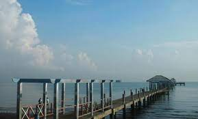
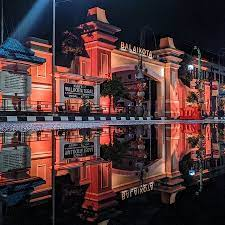
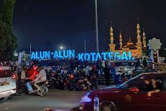

About Me
Ketua DPRD Kabupaten Tegal
Edy Prayitno
H. Edy Prayitno, S.Sos, MM, (lahir 16 Agustus 1965) adalah bupati Tegal yang menjabat pada dua periode yakni 2004-2009 dan 2009-2014. Sebelumnya, Ia adalah Ketua DPRD Kabupaten Tegal periode 1999-2004[1][2]. Ia diberhentikan pada 27 Juli 2011.
Portfolio




Blog

Post Title
Ada Banyak UKM Komponen Logam, Tegal Potensial Jadi Sentra Manufaktur
“Kita tahu Kabupaten Tegal ini punya jargon (sebagai) Jepang-nya Indonesia. Saya harap jargon itu dapat kembali bangkit..." 26/09/2021, 14:20 WIB

Post Title
Jalan Masuk Alun-alun Kota Tegal Ditutup, Paguyuban Ungkap Dampaknya
"Kami minta pemerintah mendengarkan aspirasi kami. Silakan ditutup, tapi kalau toko sudah selesai dagang. Misalnya jam 10 malam sampai pagi," pintanya

Post Title
Harga Tiket Wisata Pantai Alam Indah Kota Tegal Terbaru 2022
KOTA TEGAL – Pantai Alam Indah (PAI) menjadi objek wisata andalan Kota Tegal. Saat libur akhir pekan maupun hari besar wisata PAI kerap...
Our Team
Irwan
Manager
Rian
S.enginner
Irma
Front End Developer
Ardi
Team Manager